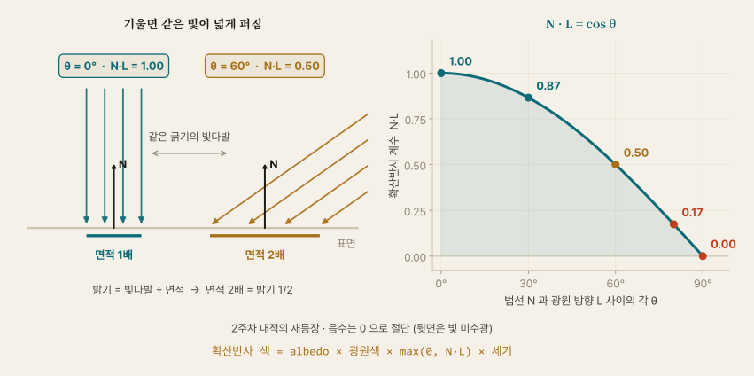
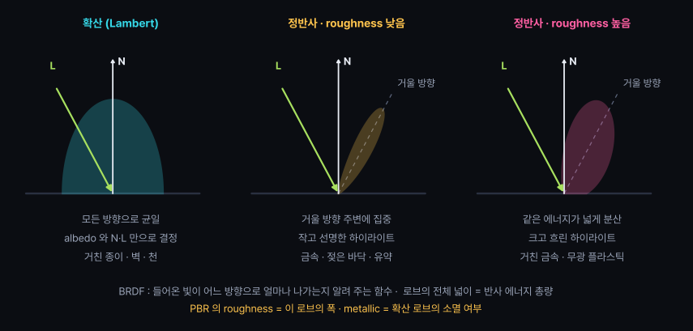
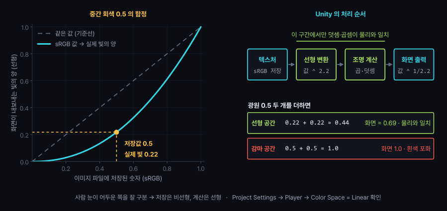
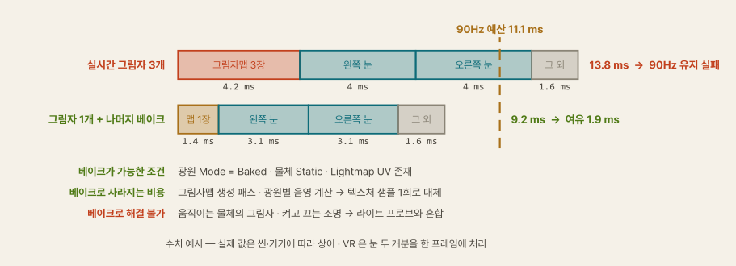
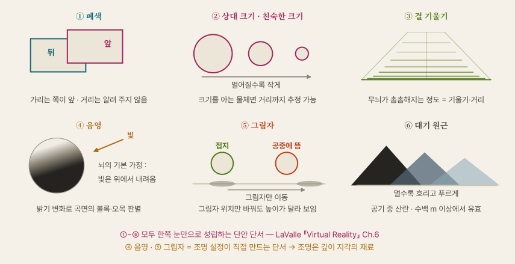

라이팅 모델, PBR 머티리얼과 라이트매핑
법선·광원 방향 두 화살표의 내적으로 표면 밝기 직접 계산 · 하이라이트가 시점 따라 움직이는 이유를 식으로 설명
AI 가 만든 씬에서 그림자 켠 광원 수 · Color Space · 텍스처 sRGB 세 가지 점검 → 헤드셋 프레임 급락·색 바램의 원인 찾기
접촉 그림자·바닥 무늬·크기 기준 물체 배치로 «떠 보이는 물체 · 좁아 보이는 방» 현상 완화
오늘의 큰 그림 : 화면 색 = 빛 × 표면 방향 × 재질 — 세 값이 곱해지고 더해지는 과정 추적
광원 · 표면 법선 · 재질 계수 → 한 번의 곱셈과 덧셈
화면 픽셀 한 칸에 대응하는 «색칠 후보» 점 — 색을 계산하는 최소 단위
삼각형 하나가 화면에서 300칸을 덮으면 프래그먼트 300개 → 칸마다 색 계산 300번
조명 비용 = 프래그먼트 수 × 한 칸 계산량 → 화면을 크게 덮는 물체일수록 비쌈
Unity : Shader Graph 의 Fragment 블록 · Window → Analysis → Frame Debugger
그래픽 카드가 꼭짓점·픽셀마다 실행하는 작은 프로그램 — 색칠 방법을 적은 «레시피»
같은 큐브라도 셰이더를 Lit → Unlit 으로 바꾸면 그늘·하이라이트가 사라짐
머티리얼 = 셰이더 + 숫자 설정값 → 셰이더가 다르면 같은 숫자도 다른 결과
Unity : 머티리얼 Inspector 맨 위 Shader 메뉴 → Universal Render Pipeline/Lit
면이 바라보는 방향을 가리키는 길이 1 의 화살표 — 면에 수직으로 꽂은 이쑤시개
바닥 법선 (0, 1, 0) = 위쪽 · 정면 벽 법선 (0, 0, −1) = 카메라 쪽
조명 밝기 계산의 기준축 — 법선이 뒤집히면 밝아야 할 면이 어둡게 나옴
Unity : 모델 Import Settings → Model 탭 → Normals (Import · Calculate)
두 화살표가 같은 쪽을 보는 정도를 숫자 하나로 계산 — 같은 방향 1 · 직각 0 · 반대 −1 (2주차)
(0, 1, 0) · (0.6, 0.8, 0) = 0×0.6 + 1×0.8 + 0×0 = 0.8 → «80% 같은 쪽»
면이 빛을 얼마나 정면으로 받는지 = 법선과 빛 방향의 내적 → 밝기 계산의 핵심 한 줄
Unity : C# Vector3.Dot(a, b) · Shader Graph 의 Dot Product 노드
빛이 표면에서 사방으로 고르게 흩어지는 반사 — 종이·벽·천처럼 보는 방향과 무관
흰 종이는 정면에서 봐도 옆에서 봐도 밝기가 같음 = 확산반사만 있는 표면
물체의 형태(어느 면이 빛을 향하나)를 보여 주는 항 — 빠지면 납작한 실루엣만 남음
Unity URP Lit : Surface Inputs → Base Map 색이 확산반사 색으로 쓰임
빛이 거울처럼 한 방향으로 튕기는 반사 — 반짝이는 하이라이트 · 보는 위치 따라 이동
당구공의 흰 반짝임 점 → 고개를 옮기면 점도 공 위에서 따라 움직임
재질감(광택·금속)의 주된 단서 — 빠지면 모든 물체가 종이처럼 보임
Unity URP Lit : Smoothness 슬라이더 · Advanced Options → Specular Highlights
조명 효과를 뺀 표면 고유의 바탕색 — 그늘·반짝임이 전혀 없는 «물감 색»
빨간 공의 알베도 (0.8, 0.2, 0.2) · 그늘진 쪽이 어두워도 알베도는 그대로
알베도 텍스처에 그림자를 그려 넣으면 조명을 바꿀 때 가짜 그림자가 남음
Unity URP Lit : Base Map (구 Built-in Standard 셰이더의 Albedo 칸)
색을 숫자로 적는 눈금 체계 — 사람 눈 기준(sRGB) · 실제 빛 에너지 기준(Linear)
회색 0.5 = sRGB 눈금으로는 «중간 밝기» · 실제 빛의 양으로는 약 0.22
눈금이 섞이면 조명 덧셈이 과장 → 밝은 곳이 흰색으로 뭉침 (AI 함정 #4)
Unity : Project Settings → Player → Other Settings → Color Space
4주차 : 정점이 화면 어느 자리에 찍히는지 결정
5주차 : 그 자리에 어떤 색이 찍히는지 결정
프래그먼트 셰이더 : 픽셀 하나마다 실행되는 색 계산 프로그램
입력 세 가지 : 빛 · 표면 방향 · 재질
1920×1080 화면 = 픽셀 약 207만 개 → 한 프레임마다 이 계산 약 200만 회 · VR 은 두 눈 화면을 따로 그림 → 그 2배 이상 (Quest 3 한 눈 약 450만 픽셀)
색칠공부 : 4주차 = 밑그림 선을 종이 어디에 그릴지 정하기 · 5주차 = 칸마다 무슨 색을 칠할지 정하기
비유의 한계 : 그래픽스의 «칸» = 픽셀 하나 · 색은 정해진 크레파스가 아니라 빛 방향을 따져 매 프레임 새로 계산
| 종류 | 빛이 나가는 모양 | 일상 예 | 거리에 따른 감쇠 |
|---|---|---|---|
| Directional | 모든 곳에 같은 방향으로 평행하게 | 태양 · 달 | 없음 |
| Point | 한 점에서 사방으로 | 전구 · 촛불 | 있음 |
| Spot | 한 점에서 원뿔 모양으로 | 손전등 · 무대 조명 | 있음 + 원뿔 가장자리로 갈수록 약해짐 |
| Area | 사각형 면 전체에서 | 창문 · 형광등 패널 | 있음 · URP 에서는 베이크 전용 |
광원 종류마다 실시간 그림자 비용이 크게 다름 → 그림자맵 (다음다음 장)
용어 풀이 → 다음 장 : 감쇠 · 베이크
광원에서 멀어질수록 빛이 약해지는 정도 — 촛불 가까이는 밝고 방 구석은 어두운 현상
전구에서 1 m 밝기 100 → 2 m 25 → 3 m 약 11 («조명 · 4» 역제곱 손계산)
감쇠를 모르고 Intensity 만 올리면 광원 근처만 하얗게 타고 먼 곳은 그대로 어두움
Unity : Point · Spot Light 컴포넌트의 Range · Intensity (Directional 에는 Range 없음)
조명 결과를 개발 중에 미리 계산해 그림(텍스처)으로 저장해 두는 방식 — «미리 싸 둔 도시락»
방 하나 베이크에 몇 분 소요 → 실행 중에는 저장된 밝기를 읽기만 → 프레임마다 계산 0
헤드셋 칩으로 매 프레임 간접광·그림자 계산은 불가능에 가까움 → VR 조명의 기본 전략
Unity : Light → Mode = Baked · Window → Rendering → Lighting → Generate Lighting
대가 : 베이크된 빛·그림자는 움직이지 않음 → 광원·물체를 옮기면 다시 베이크 (전역조명 파트에서 상세)
광원 자리에 선 사진사의 사진 : 사진에 찍힌 곳 = 빛이 닿는 곳 · 다른 물체 뒤에 숨어 안 찍힌 곳 = 그림자
비유의 한계 : 실제로는 색이 아니라 거리 숫자를 기록 · 사진 해상도가 낮으면 그림자 가장자리가 계단처럼 깨짐
사진 1장 = 장면 전체를 광원 시점에서 한 번 더 그리기 → Spot : 1장 · Directional : 거리 구간별 2~4장 · Point : 사방으로 빛 → 6방향 각각 촬영 → 6장, Spot 의 6배
→ 성능을 좌우하는 것 = 광원 개수보다 그림자를 켠 광원 개수
용어 풀이 → 다음 장 : 그림자맵 · 큐브맵 · 캐스케이드
광원 자리에서 장면을 찍어 «광원에서 보이는 가장 가까운 물체까지의 거리» 를 칸마다 적어 둔 이미지
어떤 칸에 «5 m» 기록 · 그 방향으로 8 m 떨어진 바닥 점 → 5 m 지점에 막는 물체 → 그림자
해상도가 낮으면 그림자 가장자리 계단 · 광원마다 장면을 한 번 더 그리므로 비용 큼
Unity : Light → Shadow Type · URP Asset → Lighting → Shadow Resolution
정육면체 6면 방향(위·아래·앞·뒤·좌·우)으로 찍은 이미지 6장 묶음 — 주사위 전개도 같은 사진첩
점광원 그림자 = 큐브맵 6장 · 하늘 배경(스카이박스) · 반사 프로브 결과도 큐브맵
Point 광원 그림자가 Spot 의 6배 비용인 이유 = 큐브맵 6면을 각각 촬영
Unity : 텍스처 Import Settings → Texture Shape = Cube · Reflection Probe 결과물
카메라 가까운 곳은 촘촘히, 먼 곳은 성기게 구간을 나눠 찍은 그림자맵 여러 장 — 계단식 폭포
캐스케이드 4개 : 0~5 m · 5~15 m · 15~40 m · 40~100 m 구간을 각각 한 장씩 (예시 수치)
태양 그림자 한 장으로 넓은 범위를 덮으면 발밑 그림자가 뭉개짐 · 장수만큼 비용 증가
Unity : URP Asset → Shadows → Max Distance · Cascade Count (1~4)
광원 자리의 사진사 · 사진에 «그 방향 첫 물체까지 거리»를 적어 둠 → 내 자리가 그보다 멀면 누군가 앞을 막은 것 = 그림자 · 전구 자리 사진사는 위·아래·앞·뒤·좌·우 6번 촬영
E : 표면에 닿는 빛의 세기 · d : 광원까지 거리
손계산 — 1 m 에서 밝기 100 일 때
2 m : \(100 \times \tfrac{1}{4} = 25\)
3 m : \(100 \times \tfrac{1}{9} \approx 11\)
스프레이 페인트 : 벽 가까이서 뿌리면 작은 원에 진하게 · 2배 멀리서 뿌리면 원의 지름 2배·넓이 4배 → 같은 양의 페인트가 퍼져 농도 1/4
이유 : 빛이 공 모양으로 퍼짐 → 같은 에너지가 구 표면 넓이 \(4\pi d^{2}\) 에 나뉨 → 거리 2배면 넓이 4배 · 밝기 1/4
Directional 에 감쇠가 없는 이유 : 태양까지 약 1억 5천만 km → 방 안에서 몇 m 움직여도 거리 비율 변화 ≈ 0
Unity 의 Range : 이 거리 밖은 계산 생략 · 경계 근처에서 0 으로 부드럽게 줄이는 설정 — 역제곱 곡선 자체와 별개
| Source (Lighting 창 → Environment) | 결과 |
|---|---|
| Skybox | 하늘 그림의 색이 그늘에 반영 |
| Gradient | 하늘·수평선·바닥 3색 지정 |
| Color | 단색 · 가장 단순 |
맑은 날 건물 그늘 : 해가 직접 안 비쳐도 그늘 속 글씨가 읽힘 → 하늘 전체가 거대한 푸른 조명 역할 → 그래서 실외 그늘은 푸르스름
환경광 값 0 → 그늘이 완전한 검정 → 형태 판독 불가 · 모바일·VR 에서는 환경광 설정만으로 분위기의 절반 결정
용어 풀이 → 다음 장 : 간접광 · 환경광
광원에서 바로 오지 않고 벽·바닥·하늘에 한 번 이상 튕겨서 오는 빛 — «당구공의 쿠션 샷» 같은 빛
창으로 든 햇빛이 흰 바닥에 튕겨 천장까지 밝힘 · 해가 직접 안 닿는 천장도 보임
실내 밝기의 상당 부분 = 간접광 → 빠지면 비친 곳만 밝고 나머지는 동굴처럼 어두움
Unity : Light → Indirect Multiplier · Lighting 창 → Lightmapping Settings (베이크 GI)
간접광을 «모든 방향에서 고르게 오는 빛 한 덩어리» 로 단순화한 값 — 가장 거친 근사
Source = Color, 회색 (0.2, 0.2, 0.2) → 모든 그늘에 같은 회색이 깔림 · 방향감 없음
그늘의 바닥 밝기를 정하는 값 — 0 이면 그늘이 새까매짐 · 너무 높으면 입체감 소멸
Unity : Window → Rendering → Lighting → Environment 탭 → Environment Lighting → Source
쿠션 샷 vs 안개 조명 : 간접광 = 벽에 맞고 튕긴 공의 실제 경로 · 환경광 = «어디서 왔는지 모르는 빛이 사방에 고르게 깔렸다» 고 퉁친 값

비스듬히 비춘 손전등 : 바닥을 수직으로 비추면 작고 밝은 동그라미 · 비스듬히 비추면 길쭉한 타원으로 퍼지며 어두워짐 → 같은 양의 빛이 더 넓은 바닥에 나뉘기 때문
표면이 기울어짐 → 같은 빛다발이 덮는 면적 증가 (60° 에서 2배) → 단위 면적당 빛 감소 (1/2) → 감소 비율 = cos θ → 이 값을 내적 한 번으로 계산
확산반사의 특징 : 식에 카메라 위치가 없음 → 어디서 봐도 밝기 동일 → 종이·벽·천의 «무광» 느낌
용어 풀이 → 다음 장 : 광원 방향 L · 정규화
표면에서 광원 쪽을 가리키는 길이 1 화살표 — 빛이 날아오는 방향의 반대 («빛을 마중 나가는 화살표»)
해가 머리 위 → L = (0, 1, 0) · 해가 비스듬히 위 → L = (0.6, 0.8, 0)
방향을 거꾸로(빛이 오는 쪽으로) 넣으면 N·L 부호가 뒤집혀 밝은 면과 그늘이 바뀜
Unity : Directional Light 의 회전 = 빛이 날아가는 방향 (L 은 반대) · Shader Graph Main Light Direction 노드 (버전별 상이)
방향은 그대로 두고 길이만 1 로 맞추는 계산 — 화살표를 «표준 길이 자» 에 맞춰 자르기
(3, 4, 0) 의 길이 5 → 각 칸 ÷ 5 → (0.6, 0.8, 0) · 방향 같음 · 길이 1
길이 1 이 아니면 내적 ≠ cos θ → 길이 2 짜리 화살표는 밝기 2배라는 엉뚱한 결과
Unity : C# vector.normalized · Shader Graph 의 Normalize 노드
// 표면 법선 N, 광원 방향 L (둘 다 정규화)
float ndotl = max(0.0, dot(N, L)); // ← 2주차 내적
float3 diffuse = albedo * lightColor * ndotl * intensity;
바닥의 한 점
N = (0, 1, 0) — 바닥이 위를 봄
L = (0.6, 0.8, 0) — 비스듬한 위쪽 광원
길이 확인 : \(\sqrt{0.6^2+0.8^2} = 1\)
\(\mathbf{N}\cdot\mathbf{L} = 0{\times}0.6 + 1{\times}0.8 + 0{\times}0 = 0.8\)
albedo 빨강 (0.8, 0.2, 0.2) · 흰 광원 세기 1
diffuse = (0.64, 0.16, 0.16) — 정면 대비 80% 밝기
광원이 바닥 아래 : L = (0, −1, 0) → N·L = −1 → max(0, …) 로 0 처리
음수 = 빛이 면의 뒤쪽에서 옴 → 이 면은 빛을 못 받음 → «음수 빛» 으로 어두워지는 오류 방지
면에 수직으로 꽂은 이쑤시개 : 이쑤시개가 가리키는 쪽 = 면이 바라보는 쪽 · 조명 계산은 «이 이쑤시개와 빛이 이루는 각도» 로 결정
면 법선 = 세 꼭짓점으로 만든 두 변의 외적 (두 화살표에 동시에 수직인 화살표를 구하는 계산 · 2주차)
손계산 : A = (0,0,0) · B = (0,0,1) · C = (1,0,0)
\((0,0,1)\times(1,0,0) = (0,\,1,\,0)\) → 바닥이 위를 향함
B·C 순서를 바꾸면 (0, −1, 0) → 뒤집힌 면
정점 법선 : 한 꼭짓점을 공유하는 면들의 법선 평균 → 면 경계에서 밝기가 매끄럽게 이어짐 → 각진 다면체도 둥근 공처럼 보임
두 화살표에 동시에 수직인 세 번째 화살표를 구하는 계산 (2주차) — 두 손가락이 펼친 면에 수직으로 선 엄지
(0, 0, 1) × (1, 0, 0) = (0, 1, 0) · 순서를 바꾸면 (0, −1, 0) → 방향이 정반대
곱하는 순서 = 꼭짓점 순서(감기 방향) → 순서가 틀리면 법선이 뒤집혀 면이 안 보이거나 검게 나옴
Unity : C# Vector3.Cross(a, b) · Shader Graph 의 Cross Product 노드
삼각형 하나에 하나씩 붙는 법선 — 면 전체가 같은 방향 → 면마다 밝기가 뚝뚝 끊김
로우폴리 스타일 바위 · 주사위 → 면마다 단색으로 칠한 듯한 각진 음영
의도한 «각진 스타일» 이 아닌데 면 법선만 쓰면 매끈해야 할 공이 다면체로 보임
Unity : 모델 Import Settings → Normals = Calculate · Smoothing Angle 0 에 가까울수록 각짐
한 꼭짓점을 공유하는 면들의 법선을 평균 낸 법선 — 면 사이 경계를 «사포로 문지른» 효과
면 법선 (0, 1, 0) 과 (1, 0, 0) 이 만나는 꼭짓점 → 평균 후 정규화 ≈ (0.71, 0.71, 0)
면 수를 늘리지 않고도 둥근 표면처럼 보이게 함 → 삼각형 예산 절약 (VR 에 중요)
Unity : Import Settings → Normals · Smoothing Angle (기본 60°) · Blender 의 Shade Smooth
물체를 옆으로 옮겨도 면이 보는 방향은 그대로 → 법선에 이동을 적용하면 방향이 틀어짐 → 조명 붕괴
→ 법선 변환은 방향 전용 : Unity MultiplyVector (w = 0) · MultiplyPoint 사용 금지
찰흙 공을 위에서 눌러 납작하게 : 꽂아 둔 이쑤시개도 같은 비율로 눌러 기울이면 더 이상 면에 수직이 아님 → 별도 보정(역전치) 필요
Unity 기본 셰이더는 자동 처리 · 커스텀 셰이더에서 법선을 직접 변환할 때만 주의
같은 메시라도 법선이 틀어지면 재질·조명 설정이 무의미
용어 풀이 → 다음 장 : 동차좌표 · 역전치 행렬
(x, y, z) 에 네 번째 값 w 를 붙인 표기 (2주차) — w = 1 : 위치 (이동 적용) · w = 0 : 방향 (이동 무시)
오른쪽 3 m 이동 : 점 (1, 0, 0, 1) → (4, 0, 0) · 방향 (1, 0, 0, 0) → (1, 0, 0) 그대로
«집 주소» 와 «북쪽이라는 방향» 의 차이 — 방향에 이동을 더하면 화살표가 엉뚱하게 기울어짐
Unity : Matrix4x4.MultiplyPoint (w = 1) · MultiplyVector (w = 0) · Transform.TransformDirection
늘이기·누르기 변환 후 법선을 다시 면에 수직으로 세워 주는 보정 행렬 — 눌린 이쑤시개를 «다시 똑바로 꽂기»
공을 세로로 ½ 납작하게 (scale y = 0.5) → 옆면 법선은 오히려 더 위쪽으로 기울어야 수직 유지
균일하지 않은 스케일 (1, 0.5, 1) 물체에 일반 행렬로 법선 변환 → 조명 얼룩 · 하이라이트 위치 오류
Unity : URP 셰이더 함수 TransformObjectToWorldNormal 이 자동 처리 · 직접 쓸 때만 주의
비 온 뒤 젖은 아스팔트의 가로등 반사 : 걸어가면 반짝이는 자리가 따라 움직임 → 반짝임 = 광원·표면·내 눈의 각도가 거울 반사 조건에 맞는 자리에서만 보임
식 읽기 : H = 광원 쪽과 눈 쪽의 한가운데 · N·H = 면이 그 한가운데를 얼마나 정면으로 보나 · s 제곱 = 얼마나 정확히 맞아야 반짝이나
용어 풀이 → 다음 장 : 시선 방향 V · 하프벡터 H · 광택 지수 s
표면의 한 점에서 카메라(눈) 쪽을 가리키는 길이 1 화살표 — «이 점에서 나를 올려다보는 방향»
카메라가 점의 바로 위 → V = (0, 1, 0) · 고개를 옆으로 옮기면 V 도 같이 기울어짐
정반사 식에만 V 가 들어감 → 하이라이트가 시점 따라 움직이는 이유 · VR 은 두 눈의 V 가 서로 다름
Unity : Shader Graph 의 View Direction 노드 · 카메라 Transform 위치에서 계산
L 과 V 의 정확히 가운데 방향 — 면이 이 방향을 보면 빛이 거울처럼 눈으로 튕겨 옴
L = (0, 1, 0) · V = (1, 0, 0) → 합 (1, 1, 0) → 정규화 (0.71, 0.71, 0) = 두 화살표 사이 45°
«반사 방향을 직접 계산» 보다 덧셈 한 번으로 싸게 거울 조건을 판정 (Blinn-Phong 의 핵심 아이디어)
Unity : 전용 노드 없음 · Shader Graph 에서 Add → Normalize 로 직접 조립 · URP Lit 내부에서 자동 계산
하이라이트를 얼마나 좁게 모을지 정하는 거듭제곱 숫자 — 클수록 «작고 날카로운» 반짝임
N·H = 0.9 일 때 s = 8 → 0.43 (넓게 남음) · s = 64 → 0.001 (거의 사라짐)
s 를 모르고 반짝임을 키우려다 하이라이트 크기만 커져 «기름 바른 플라스틱» 이 됨
Unity URP : s 를 직접 입력하지 않음 · Smoothness (0~1) 가 내부에서 이 값으로 환산됨
H = L + V 를 길이 1 로 → 두 화살표 사이 각을 반으로 접은 방향 (α = α)
그림 : N 과 H 사이 15° → \( \mathbf{N}\cdot\mathbf{H} \approx 0.97 \) → 거울 조건에 거의 일치 → 반짝
눈(V)이 움직이면 H 도 회전 → 하이라이트 이동
젖은 아스팔트의 가로등 · «가로등과 내 눈의 한가운데»를 정면으로 보는 바닥 조각만 반짝
| N·H (거울 조건과 일치도) | s = 8 | s = 64 |
|---|---|---|
| 1.00 (정확히 일치) | 1.00 | 1.00 |
| 0.95 | 약 0.66 | 약 0.04 |
| 0.90 | 약 0.43 | 약 0.001 |
손계산 : \(0.9^{8} \approx 0.43\) · \(0.9^{64} \approx 0.001\)
조금 벗어나도 값이 남음 → 넓고 흐린 하이라이트 · 무광 플라스틱
조금만 벗어나도 0 → 좁고 선명한 하이라이트 · 광택 금속·유리
확산반사와의 차이 : 카메라 위치 V 가 식에 포함 → 고개를 돌리면 하이라이트 이동
→ VR 에서 재질감의 주된 단서 · 머리를 움직일 때 하이라이트가 따라 움직여야 «진짜 광택» 으로 지각
손계산 (흰 광원 세기 1 · 한 채널) : 환경광 0.1 + albedo 0.8 × N·L 0.8 + 정반사 세기 0.5 × 0.43 = 0.1 + 0.64 + 0.215 ≈ 0.96
| 항 | 담당 | 빠졌을 때 |
|---|---|---|
| 환경광 | 간접광 근사 | 그늘이 완전한 검정 |
| 확산반사 | 물체의 형태 | 면 구분 소멸 · 납작한 실루엣 |
| 정반사 | 재질감 · 광택 | 전부 종이처럼 보임 |
세 항 = 세 가지 질문 : 그늘은 얼마나 밝은가 · 이 면이 빛을 정면으로 받는가 · 이 면이 거울 조건에 맞는가
합이 1 을 넘으면 화면에서는 흰색으로 잘림 → 밝기 조절은 광원 세기와 함께 판단
장보기 영수증 합계 : 품목(들어오는 방향)마다 수량(들어온 빛) × 단가(재질 규칙 f) × 할인율(기울기 cos) → 전부 더한 총액 = 눈으로 나가는 빛 · 적분 = 품목을 무한히 잘게 나눈 영수증
Lambert · Blinn-Phong · PBR 의 차이 = 가운데 f 를 무엇으로 두는가 · 실시간 렌더링 = 이 합계를 몇 개 방향만 골라 근사
용어 풀이 → 다음 장 : 식의 기호
\(L_o\) : 이 점에서 눈 쪽으로 나가는 빛 (= 화면에 찍힐 색) · \(L_e\) : 표면이 스스로 내는 빛
꺼진 모니터 \(L_e = 0\) · 켜진 네온사인 \(L_e > 0\) → 주변이 깜깜해도 혼자 보임
\(L_e\) 는 다른 빛과 무관하게 더해지는 항 → «스스로 빛나는 재질» 은 조명으로 꺼지지 않음
Unity URP Lit : Emission 체크 → Emission Map · 색 (= \(L_e\))
표면 위 반구(Ω)의 모든 방향에서 들어오는 빛을 빠짐없이 더하기 — 그릇을 엎어 놓은 모양의 하늘 전체
바닥의 한 점 : 머리 위 하늘 · 옆 벽 · 천장 등 들어오는 방향이 무한히 많음 → 전부 합산
무한한 방향을 매 프레임 다 더할 수 없음 → 실시간 그래픽스 = 몇 개 방향만 골라 근사하는 기술
\(f\) : 재질의 반사 규칙(BRDF) · \(L_i\) : 그 방향에서 들어온 빛 · \(\mathbf{N}\cdot\omega_i\) : Lambert 의 기울기 보정 (cos θ)
영수증 한 줄 = 단가 \(f\) × 수량 \(L_i\) × 할인율 cos θ → 비스듬히 들어온 빛은 «할인» 되어 덜 기여
Lambert · Blinn-Phong · PBR 의 차이 = \(f\) 자리에 무엇을 넣는가 하나뿐

재질의 «반사 규칙표» — 어느 방향에서 들어온 빛을 어느 방향으로 얼마나 돌려보내는지 적은 표
종이의 표 : 어디서 들어와도 사방에 고르게 · 거울의 표 : 들어온 각도 그대로 반대편 한 방향에만
«재질» 의 정체 = 이 규칙표 → 색만 바꾸고 규칙(거칠기·금속)을 안 바꾸면 물질감이 안 바뀜
Unity : URP Lit 셰이더가 내장 BRDF 사용 · 조절 손잡이 = Metallic · Smoothness
반사된 빛이 퍼지는 모양을 그린 풍선꼴 도형 — 길게 뻗은 쪽으로 빛이 많이 나감
젖은 바닥 : 반사 방향으로 길고 가는 로브 · 무광 플라스틱 : 짧고 뚱뚱한 로브
로브 폭 = 하이라이트 크기 → 화면 속 반짝임이 «작고 강한가, 크고 흐린가» 를 결정
Unity : 로브 자체는 안 보임 · Smoothness 를 움직이며 Scene 뷰 구 하이라이트 크기 변화로 확인
호스 노즐 : 나오는 물의 양은 그대로 · 노즐을 좁히면 가늘고 센 물줄기 (작고 강한 하이라이트) · 넓히면 넓고 약한 분무 (크고 흐린 하이라이트)
비유의 한계 : 실제 표면은 받은 빛 일부를 흡수 → 나가는 총량 ≤ 들어온 양
표면의 눈에 안 보이는 미세한 울퉁불퉁함 — 클수록 빛이 여러 방향으로 흩어져 로브가 넓어짐
새 볼링공 거칠기 약 0.1 → 형광등이 또렷이 비침 · 사포질한 공 약 0.7 → 뿌연 얼룩만
Unity 는 반대 이름(Smoothness)을 씀 → 다른 툴의 Roughness 값을 그대로 넣으면 광택이 뒤집힘
Unity URP Lit : Smoothness = 1 − Roughness · Source = Metallic Alpha 또는 Albedo Alpha
표면이 받은 빛보다 더 많은 빛을 내보낼 수 없다는 원칙 — 받은 용돈보다 많이 쓸 수 없음
하이라이트가 좁아지면 그만큼 더 밝아짐 · 넓어지면 흐려짐 → 총량은 그대로
이 원칙 덕에 PBR 재질은 어떤 조명 아래서도 «너무 밝게 타는» 일이 적음
Unity URP Lit : 셰이더가 자동 보장 · 단 Emission 은 예외 (스스로 내는 빛)
PBR (Physically Based Rendering, 물리 기반 렌더링) : 실제 물질의 측정값 범위로 재질을 정하는 방식 → 조명을 바꿔도 그럴듯한 결과 유지
| 이름 | 범위 | 의미 | 잘못 썼을 때 |
|---|---|---|---|
| Albedo | 색 | 조명을 뺀 바탕색 | 조명과 무관하게 떠 보임 |
| Metallic | 0 또는 1 | 금속 여부 | 중간값 남용 → 재질 불명 |
| Smoothness | 0 ~ 1 | 표면 매끈함 (1 − 거칠기) | 전부 플라스틱 질감 |
| Normal map | RGB = 방향 | 표면 요철 방향을 그림으로 저장 | 6주차에서 상세 |
| Occlusion | 0 ~ 1 | 틈새·구석에 빛이 덜 드는 정도 | 입체감 저하 |
같은 빨간 albedo 로 만드는 세 물체 : Metallic 0 · Smoothness 0.2 → 고무공 · Metallic 0 · Smoothness 0.9 → 당구공 · Metallic 1 · Smoothness 0.9 → 빨간 크롬 장식
물리 기반 렌더링 — 실제 물질을 측정한 값의 범위 안에서 재질을 정하는 방식 · «실측 레시피로 요리하기»
같은 금속 재질 → 낮 하늘 아래 · 실내 전구 아래 · 노을 아래 모두 «금속» 으로 보임
눈대중 재질은 조명 하나에만 맞춰짐 → 조명을 바꾸면 갑자기 플라스틱처럼 변함
Unity : URP 기본 머티리얼 = Universal Render Pipeline/Lit (PBR 셰이더)
«이 표면이 금속인가» 를 0(비금속) 또는 1(금속)로 적는 값 — 사실상 예/아니오 스위치
금반지 · 쇠 숟가락 = 1 · 나무 · 플라스틱 · 피부 · 페인트 칠한 금속 = 0 (표면이 페인트이므로)
0.5 같은 중간값 → 현실에 없는 «반쯤 금속» → 어떤 조명에서도 정체불명의 회색빛
Unity URP Lit : Workflow Mode = Metallic → Surface Inputs → Metallic Map · 슬라이더
틈새·구석처럼 주변에 가려 간접광이 덜 드는 정도를 0~1 로 적은 값 — «먼지가 쌓이는 자리» 지도
벽돌 사이 줄눈 0.3 · 평평한 벽돌 면 1.0 → 줄눈만 은근히 어두워져 입체감 생김
빠지면 구석까지 고르게 밝아 장난감 같은 인상 · sRGB 체크하면 값이 틀어짐 (색공간 파트)
Unity URP Lit : Surface Inputs → Occlusion Map · URP 렌더러의 SSAO 기능은 별도
금반지 vs 빨간 플라스틱 공 : 금반지에 비친 형광등은 금색으로 물듦 · 빨간 공의 하이라이트는 흰색 → 금속은 반사광에 자기 색을 입힘 · 비금속은 반사광이 무색
확산반사 거의 0 → albedo 가 반사광의 색 역할 → 금·구리 특유의 색 입은 반사
몸체 색 = 확산반사 (albedo) · 정반사 = 무채색, 들어온 빛의 약 4% 내외
metallic 0.5 같은 중간값 → 현실에 없는 «반쯤 금속» → 재질 불명
중간값은 녹슨 경계·벗겨진 페인트 같은 전이 구간에만 사용
PBR 의 전제 : 물리 범위 안의 값 입력 → 범위를 벗어난 값 → 조명을 바꿀 때마다 결과 예측 불가
→ AI 에게 재질 생성을 요청할 때 이 범위를 제약 조건으로 명시
sRGB 50 이 실제 반사율 몇 % 인지 → 색공간 파트에서 손계산
볼륨 노브 눈금 vs 스피커의 실제 출력 : 노브 눈금은 «귀에 들리는 크기» 에 맞춰 나눔 → 눈금 50% ≠ 실제 소리 에너지 50% · 두 스피커 소리를 합치는 계산은 눈금이 아닌 실제 에너지끼리 해야 정확
그래서 : 텍스처는 눈 기준(sRGB)으로 저장 → 계산 직전 선형으로 변환 → 조명 계산 → 화면 출력 때 다시 sRGB
용어 풀이 → 다음 장 : sRGB · 감마 · 선형
이미지 파일·모니터의 표준 눈금 — 사람 눈이 어두운 쪽 차이를 더 잘 느낌 → 어두운 쪽에 숫자를 촘촘히 배정
PNG 의 회색 128 (= 0.5) → 눈에는 «중간 밝기» · 실제 빛 에너지는 흰색의 약 22%
8비트(0~255) 로 저장할 때 어두운 계조가 뭉개지지 않게 하는 압축 요령 → 대부분의 그림 파일이 sRGB
Unity : 텍스처 Import Settings → sRGB (Color Texture) 체크박스
sRGB 눈금과 실제 빛 사이의 휘어진 변환 곡선 (지수 약 2.2) — 눈금 → 에너지는 «2.2 제곱»
\(0.5^{2.2} \approx 0.22\) · 거꾸로 \(0.22^{1/2.2} \approx 0.5\) → 저장할 땐 펴고, 계산할 땐 다시 휨
Unity 의 «Gamma» 설정 = 이 변환 없이 눈금 숫자로 바로 계산 → 조명 덧셈이 과장됨
Unity : Player → Other Settings → Color Space = Gamma (구형 방식 · 비권장)
숫자 2배 = 실제 빛 에너지 2배인 곧은 눈금 — 빛을 더하고 곱하는 계산의 기준
전구 두 개 0.22 + 0.22 = 0.44 → 실제로 빛 2배 → 화면용 변환 후 약 0.7 (흰색 아님)
PBR 값 범위 · 라이트맵 · 조명 세기 모두 선형 계산 전제 → 프로젝트 시작 시 결정
Unity : Player → Other Settings → Color Space = Linear (URP 템플릿 기본값)

실제 빛끼리 합산 : 0.22 + 0.22 = 0.44 (빛 2배)
화면용 변환 : \(0.44^{1/2.2} \approx 0.7\) → 밝아지되 여유 유지
눈금 숫자끼리 합산 : 0.5 + 0.5 = 1.0
→ 바로 흰색 포화 · 실제 빛 2배를 화면에서 과장
albedo 범위 해석 : sRGB 50 → 50/255 ≈ 0.20 → 선형 약 0.03 (반사율 약 3%) · sRGB 243 → 0.95 → 선형 약 0.90 (반사율 약 90%)
2.2 제곱은 근사 · 실제 sRGB 곡선은 어두운 구간이 직선인 조금 다른 식 — 결과 차이 1~2% 수준
| Gamma | Linear | |
|---|---|---|
| 조명 덧셈 | 과장 | 물리와 일치 |
| 밝은 부분 | 흰색 포화 | 계조 유지 |
| 그늘 | 검게 뭉침 | 단계 유지 |
| PBR | 기준 붕괴 | 정상 |
확인 위치 : Project Settings → Player → Color Space
URP 템플릿 기본값 Linear · 구형 프로젝트·일부 예제는 Gamma 인 경우 존재
학기 중간에 전환 → 모든 머티리얼·조명의 밝기 재조정 필요 → 프로젝트 시작 시점에 Linear 로 결정
이유 : PBR 의 값 범위(albedo 50~243 등)는 선형 계산을 전제로 만든 기준 → Gamma 에서 계산하면 같은 값이 다른 밝기로 나옴
| 텍스처 | sRGB 체크 | 담는 내용 |
|---|---|---|
| Albedo · Emission | 켬 | 사람이 보는 색 |
| Normal map | 끔 (Texture Type = Normal map 으로 지정) | 방향 데이터 |
| Metallic · Smoothness | 끔 | 재질 수치 |
| Occlusion · Mask | 끔 | 가림 비율 |
판단 기준 : 사람이 보는 색인가, 계산용 숫자인가
예 : smoothness 맵 0.5 에 sRGB 체크 → 계산에 약 0.22 로 들어감 → 의도보다 훨씬 거친 표면
AI 생성 머티리얼에서 자주 누락되는 설정 → 텍스처 임포트 직후 Inspector 에서 확인
광원 → 표면 → 눈
지금까지 계산한 Lambert · 정반사 항
광원 → 빨간 벽 → 흰 바닥 → 눈
색 번짐 (color bleeding) : 바닥이 벽 색으로 물듦
빨간 티셔츠와 흰 종이 : 햇빛 아래 빨간 옷 가까이 흰 종이를 대면 종이가 분홍빛으로 물듦 → 옷에서 튕긴 빨간 빛 = 간접광
전역조명 (Global Illumination, GI) : 직접광 + 여러 번 튕긴 간접광까지 계산하는 조명
실내 밝기의 상당 부분 = 간접광 → 직접광만 계산 시 무대 조명 같은 인상 → 간접광 계산은 비쌈 → 미리 구워 두는 방식(베이크)
광원에서 바로 온 빛 + 여러 번 튕긴 간접광까지 «장면 전체(전역)» 를 따져 계산하는 조명
창 하나뿐인 방 : 직접광만 → 창가 바닥만 밝은 사각형 · GI → 벽·천장까지 은은하게 밝음
GI 가 빠진 실내 = 무대 조명 같은 인상 · 매 프레임 계산은 너무 비쌈 → VR 은 베이크로 해결
Unity : Window → Rendering → Lighting → Scene 탭 → Baked Global Illumination · Generate Lighting
색 있는 표면에서 튕긴 빛이 옆 표면을 그 색으로 물들이는 현상 — 간접광이 «색을 실어 나름»
빨간 소파 옆 흰 벽 아랫부분이 분홍빛 · 잔디밭 위 흰 공의 아랫면이 연두빛
물체들이 «같은 공간에 함께 있다» 는 인상을 주는 단서 → 없으면 물체가 합성 사진처럼 따로 놂
Unity : 베이크 GI 결과에서 확인 · 물체마다 Mesh Renderer → Contribute Global Illumination 체크 필요

도시락 : 조명 계산(요리)을 개발 중에 미리 해서 텍스처(도시락통)에 담아 둠 → 실행 중에는 꺼내 쓰기만 → 빠름 · 대신 메뉴(광원 위치·물체 배치)가 바뀌면 다시 요리(재베이크)
| 요소 | 쉬운 뜻 | 대상 | 한계 |
|---|---|---|---|
| 라이트맵 Lightmap | 빛과 그늘을 미리 칠해 둔 텍스처 — 벽지에 조명을 그려 넣은 것 | 움직이지 않는 물체 | 물체 이동 시 어긋남 |
| 라이트 프로브 Light probe | 공간 곳곳에 놓은 측정점 — 그 자리의 방향별 밝기 저장 | 움직이는 물체 | 그림자 미포함 |
| 반사 프로브 Reflection probe | 그 자리에서 사방을 찍은 큐브맵 — 광택 표면에 비칠 풍경 | 광택 표면 | 갱신 비용 |
빨라지는 이유 : 간접광·그림자를 매 프레임 계산 → 텍스처에서 값 한 번 읽기로 대체 → 앞 도해 예시에서 13.8 ms → 9.2 ms
| 설정 | 뜻 |
|---|---|
| 광원 Mode = Baked | 이 광원을 굽기 대상으로 지정 |
| 물체 Static 표시 | «이 물체는 움직이지 않음» 약속 → 라이트맵에 구워도 안전 |
| Lightmap UV 생성 | UV : 3D 표면을 2D 그림에 펼쳐 붙일 좌표 (모델의 «전개도») → 라이트맵을 붙일 자리 |
셋 중 하나만 빠져도 결과 미반영 · 오류 메시지 없음
라이트 프로브 = 공간에 흩어 놓은 조도계 : 움직이는 캐릭터는 주변 조도계 값을 섞어 자기 밝기로 사용
비유의 한계 : 측정점 사이 값을 섞을 뿐 → 그림자 같은 날카로운 변화는 표현 불가
혼합 조명 : 태양 하나만 실시간, 나머지 전부 베이크 — VR 의 기본 구성
재질 = 빛을 어떻게 돌려보낼지의 규칙(BRDF) · 화면 색 = 규칙 × 들어온 빛
→ 규칙이 같아도 들어온 빛이 다르면 결과가 다름
거울 : 거울 자체에는 색이 거의 없음 · 텅 빈 흰 방에 둔 거울은 그냥 흰 판 → 금속의 «금속다움» 도 비칠 주변이 있어야 드러남
거울 · 텅 빈 흰 방의 거울은 그냥 흰 판 · 금속도 비칠 주변이 있어야 «금속다움»이 드러남 → 재질 값보다 반사될 환경부터 확인
실시간 그림자 남발 · 색공간 설정 혼동
에디터에서 멀쩡한 이유 : 에디터 = PC 그래픽카드 · 헤드셋 = 휴대폰급 칩 → 같은 설정이 헤드셋에서 몇 배 무거움
두 증상의 공통점 : 코드 오류 없음 · 설정 값만의 문제
→ 컴파일 오류·경고 미발생 → 에디터만 보고는 발견 어려움
light.shadows = LightShadows.Soft 를 명시 → 기본값이었다면 꺼져 있었을 점광원 그림자까지 켜짐AI 가 이렇게 쓰는 이유 : «보기 좋은» 결과 우선 · 성능 제약을 요청에 넣지 않으면 고려하지 않음
손계산 : Point 3개 × 6장 = 18장 + Directional 캐스케이드 최대 4장 → 그림자용 추가 그리기 최대 22회 · 태양만 실시간으로 바꾸면 최대 4회
볼륨 눈금으로 소리 합치기 (색공간 비유 재사용) : 눈금 50% 두 개를 더해 «100%» 로 적는 실수 → 실제보다 훨씬 큰 소리로 기록 = Gamma 에서의 조명 덧셈
| 확인 대상 | 도구 | 판정 기준 |
|---|---|---|
| 그림자 광원 수 | Light 컴포넌트 일괄 확인 | VR 기준 0~1개 |
| 그림자 패스 | Frame Debugger (한 프레임을 그리는 단계를 하나씩 보여 주는 Unity 도구) | 그림자 그리기 단계 수 |
| 색공간 | Project Settings | Linear 여부 |
| 텍스처 설정 | Inspector | albedo = sRGB 체크 · 데이터맵 = 해제 |
| 프레임타임 | OVR Metrics Tool (헤드셋 화면에 성능 수치를 띄우는 Meta 도구) | 헤드셋에서 11.1ms 이내 |
프레임타임 : 한 장면을 그리는 데 걸린 시간 · 90Hz 헤드셋 → \(1000\,\text{ms} \div 90 \approx 11.1\,\text{ms}\) 안에 끝내야 끊김 없음
에디터 수치로 판정 불가 → 헤드셋 실측 기준
화면 한 장을 그리는 데 걸린 시간 (ms) — fps 의 뒤집은 값 · «한 장당 마감 시간»
90Hz → 1000 ÷ 90 ≈ 11.1 ms · 그림자 추가로 13.8 ms 가 되면 → 약 72 fps 로 떨어짐
fps 평균만 보면 가끔 튀는 느린 프레임이 숨음 → ms 로 보면 «마감 초과» 가 바로 보임
Unity : Window → Analysis → Profiler · Game 뷰 Stats (에디터 기준이므로 참고만)
한 프레임을 그리는 단계를 하나씩 멈춰 보여 주는 Unity 도구 — 요리 과정을 한 컷씩 넘겨 보기
목록에 «Shadows» 관련 단계가 광원 수만큼 줄줄이 → 그림자맵을 몇 번 그리는지 셀 수 있음
«무엇이 느린지» 짐작 대신 «무엇을 몇 번 그렸는지» 를 눈으로 확인
Unity : Window → Analysis → Frame Debugger → Enable
Quest 헤드셋 화면 위에 fps · 프레임타임 · 칩 사용률을 겹쳐 띄우는 Meta 의 성능 측정 앱
헤드셋 안에서 걸어 다니며 «이 방에 들어서면 72 fps 로 떨어짐» 을 그 자리에서 확인
에디터는 PC 성능 → 헤드셋 실측만이 진짜 판정 근거 (14주 플레이테스트에서도 사용)
Quest : Meta Horizon Store 에서 설치 → 헤드셋 설정에서 성능 오버레이 켜기 (버전마다 메뉴 다름)
판단 기준 : 움직이는 그림자가 경험에 필요한가 → 필요 없는 그림자 → 베이크 대상
깊이 지각과 공간 인식 · LaValle 『Virtual Reality』 Ch.6
뇌가 «얼마나 먼가» 를 판단할 때 쓰는 시각 정보 하나하나 — 거리를 추리하는 «증거물»
컵이 책을 가림(가려짐) · 같은 의자인데 작게 보임(크기) · 바닥 그림자 위치 → 각각 하나의 단서
VR 은 일부 단서를 못 줌 → 남은 단서를 만들어 주지 않으면 공간이 납작·좁게 느껴짐
이번 주 «깊이 단서 실험실» 데모 · Unity 에서는 그림자 · 안개 · 바닥 텍스처 설정이 곧 단서
한쪽 눈만으로도 얻는 깊이 단서 — 그림자·크기·가려짐·무늬·흐림 등 · 사진 한 장에도 존재
풍경 사진만 보고도 «산이 집보다 멀다» 를 앎 → 전부 단안 단서 덕분
약 10 m 바깥의 공간감은 거의 단안 단서 담당 → 조명·텍스처 설계가 곧 거리감 설계
Unity : Light 그림자 · Lighting 창 → Environment → Other Settings → Fog · 바닥 머티리얼 무늬
약 6.3 cm 떨어진 두 눈이 보는 장면의 미세한 차이 — 뇌가 두 장을 겹쳐 입체로 계산
팔 뻗은 엄지를 한 눈씩 감아 보면 크게 점프 · 창밖 건물은 거의 그대로
가까운 거리(팔 닿는 범위)에서 가장 강한 단서 → VR 잡기·놓기 정확도의 바탕
Quest 3 : 렌즈 간격(IPD) 조절 휠 약 58~71 mm · Unity XR 이 두 눈 카메라를 자동 생성
가까운 것을 볼 때 두 눈이 안쪽으로 모이는 움직임 — 코끝을 보면 «사팔눈» 이 되는 그 동작
30 cm 앞 책 → 두 눈이 크게 모임 · 먼 산 → 두 시선이 거의 평행
VR 에서 수렴은 물체 거리에 맞게 바뀌지만 초점(조절)은 고정 → 두 신호 불일치 = 눈 피로 원인
10주차 공간 UI : 패널을 0.5 m 보다 가깝게 두지 말라는 규칙의 근거
거리에 맞춰 수정체 두께를 바꿔 초점을 맞추는 작용 — 카메라 렌즈의 «자동 초점»
책을 보다 창밖을 보면 잠깐 흐렸다가 선명해짐 = 조절이 다시 맞춰지는 시간
HMD 화면은 렌즈로 일정 거리에 고정된 상 → 가까운 물체든 먼 물체든 초점은 같은 자리
Quest 3 : 렌즈 초점 거리 고정 (정확한 값은 기기마다 다름 · 대략 1~2 m 대)
머리가 움직일 때 가까운 것은 많이, 먼 것은 적게 움직여 보이는 현상 — 기차 창밖 풍경
머리 10 cm 이동 : 1 m 물체 약 5.7° · 10 m 물체 약 0.57° 이동 → 10배 차이
한 눈으로도 강력한 단서 · 카메라가 머리를 정확히 따라가지 않으면 깨지고 멀미 유발
Unity XRI : XR Origin → Main Camera 의 Tracked Pose Driver 가 머리 위치를 매 프레임 반영
한 번에 볼 수 있는 범위를 각도로 잰 값 — 고개를 돌리지 않고 보이는 «창문의 폭»
사람 양안 수평 약 200° · Quest 3 약 110° → 시야 가장자리가 검은 테두리로 잘림
주변시 자극이 줄면 거리·속도 판단 근거도 줄어듦 → VR 거리 과소추정 원인 후보
Unity : XR 실행 중 Camera 의 Field of View 는 헤드셋이 덮어씀 → 직접 바꿔도 무시됨
망막 한가운데 가장 선명하게 보는 작은 영역 (시야 중심 약 2°) — 팔 뻗은 엄지손톱 정도 크기
이 문장의 한 글자를 보면 옆 줄은 이미 흐림 → 선명한 곳은 시선이 닿은 아주 좁은 범위
시야 가장자리는 덜 선명하게 그려도 티가 덜 남 → 렌더링 비용 절약 기법의 근거
Quest : 고정 포비티드 렌더링(가장자리 해상도 낮추기) · Unity OpenXR Meta 설정에서 지원 (버전마다 다름)
물체가 바닥에 닿는 지점 바로 아래 생기는 짙고 좁은 그림자 — «여기 붙어 있음» 표시
책상 위 컵 밑의 진한 테두리 · 컵을 1 cm 들어 올리면 그림자와 컵 사이 틈이 생김
없으면 물체가 바닥에서 떠 보임 → VR 에서 잡기·놓기 위치 판단 오류
Unity : 물체 밑에 흐린 원판 텍스처를 붙인 Quad 1장 (가장 싼 방법) · 베이크 AO 로도 일부 표현
| 항목 | 사람 | Quest 3 | 결과 |
|---|---|---|---|
| 수평 시야 | 양안 약 200° | 약 110° | 주변시(시야 가장자리) 자극 축소 |
| 양안 겹침 | 약 120° | 약 95° | 입체로 보이는 영역 축소 |
| 최고 해상도 | 중심와 약 2° | 화면 전체 균일 | 6주차 PPD(각도당 픽셀 수) 주제 |
| 초점 조절 | 거리에 따라 변화 | 화면 거리에 고정 | 10주차 공간 UI |
HMD(머리에 쓰는 디스플레이)가 제공하지 못하는 단서 존재 → 나머지 단서로 보충 필요
→ 그 보충분의 큰 부분을 조명이 만드는 단서(음영·그림자)가 담당
| 분류 | 단서 | 유효 거리 | VR 에서의 공급원 |
|---|---|---|---|
| 단안 · 정적 | 폐색(가려짐) · 상대 크기 · 결 기울기(바닥 무늬가 멀수록 촘촘해짐) · 음영 · 그림자 · 대기 원근(먼 것일수록 뿌옇고 푸름) | 전 범위 | 렌더링 결과 자체 |
| 단안 · 운동 | 운동 시차 | 중거리까지 | 머리 트래킹 |
| 양안 | 양안 시차 · 수렴 | 약 10 m 이내 | 두 눈 렌더링 |
| 생리 | 조절 (초점 조정) | 약 2 m 이내 | HMD 에서 고정 |
양안 시차의 담당 범위는 팔 닿는 거리 주변 → 그 바깥 공간감의 대부분을 단안 단서가 담당
엄지 손가락 실험 : 팔을 뻗어 엄지를 세우고 한 눈씩 번갈아 감으면 엄지가 크게 점프 · 창밖 먼 건물은 거의 그대로 → 두 눈 영상의 차이 = 거리 정보 · 멀어질수록 차이가 사라짐
θ : 두 눈이 물체를 보는 각도 차 (라디안) · b : 두 눈 사이 약 6.3 cm · d : 물체까지 거리
| 거리 d | 각도 차 θ |
|---|---|
| 0.5 m | 0.063 ÷ 0.5 ≈ 0.13 → 약 7° |
| 10 m | 0.063 ÷ 10 ≈ 0.006 → 약 0.4° |
| 100 m | 약 0.04° |
θ 가 1/d 로 줄어듦 → 약 10 m 바깥에서는 거리 근거로 약함 (대략적 경계 · 개인차 큼)
엄지 손가락 실험의 평면도 · 가까운 엄지는 두 눈의 시선이 크게 벌어져 번갈아 감을 때 크게 점프 · 먼 건물은 두 시선이 거의 겹쳐 그대로

밝기 변화 → 곡면의 볼록·오목 판별
뇌의 기본 가정 : 빛은 위에서 내려옴 → 같은 달 분화구 사진을 180° 회전 → 분화구가 언덕으로 뒤바뀌어 보임
확산반사 항 N·L 의 분포가 그대로 형태 정보 → 환경광만 적용된 물체 : 윤곽만 남고 입체 정보 소멸
조명을 아래에서 비추면 «위에서 오는 빛» 가정이 깨짐 → 형태 판독 실패
캠프파이어 괴담 얼굴 : 턱 아래에서 손전등을 비추면 평소 그늘지던 눈두덩·코 밑이 밝아지고 이마 위가 어두워짐 → 익숙한 얼굴이 낯설고 무섭게 읽힘 → 공포 연출이 아래 조명을 쓰는 근거
접촉 그림자 : 물체와 바닥이 닿는 지점 바로 아래 생기는 짙은 그림자
화면 속 물체 위치는 그대로 두고 그림자 위치만 이동 → 같은 물체가 공중에 뜬 상태로 지각
VR 에서 접촉 그림자 누락 → 손에 든 물체·바닥 물체가 떠 보임 → 잡기·놓기 정확도 저하
해법 : 간이 접촉 그림자 (물체 밑에 흐린 원판 텍스처 1장) → 실시간 그림자 없이 접지감 확보
책상 위 컵 들어 올리기 : 컵이 책상에 닿아 있으면 그림자가 컵 밑에 붙어 있음 · 들어 올리면 그림자가 컵에서 떨어져 나감 → 컵과 그림자 사이 간격 = 뜬 높이
세 공의 실제 거리는 서로 다름 · 단서를 끄면 화면 크기가 같아지도록 보정
기차 창밖 풍경 : 가까운 전봇대는 휙휙 지나가고 먼 산은 천천히 움직임 → 움직이는 속도 차이만으로 거리 판단
손계산 : 머리를 옆으로 10 cm 이동
1 m 물체 : 약 5.7° 이동 · 10 m 물체 : 약 0.57° 이동 → 10배 차이
모니터 게임에는 없는 단서 → VR 은 머리 트래킹으로 매 프레임 공급
조건 : 카메라가 실제 머리 위치를 그대로 따라갈 것 → 코드로 카메라를 직접 움직이면 이 단서 왜곡 — 11주차 함정 #8
기차 창밖 · 같은 만큼 움직여도 가까운 전봇대는 시선 방향이 크게 꺾여 휙 지나가고, 먼 산은 거의 안 꺾여 천천히 흐름
대응 : 바닥 무늬 · 접촉 그림자 · 친숙한 크기의 물체(문·의자) 배치 → 단안 단서를 충분히 공급해 판단 근거 보강
설계 선택지 : 단서를 보강해도 압축이 남을 수 있음 → 통로·방을 실측보다 조금 넓게 만드는 방안도 검토 후 헤드셋에서 확인
VR 의 조명 = 공간 정보 전달 수단
예쁘게 보이는 설정과 별개의 기준
환경광만 사용 · 접촉 그림자 없음 · 무늬 없는 단색 바닥 → 형태·위치·거리 단서 모두 소멸
베이크된 간접광 · 간이 접촉 그림자 · 바닥 무늬 · 크기 기준 물체 → 실시간 그림자 없이도 단서 확보
이번 주 핵심 : 설정 값을 명세에 숫자로 고정
[목표]
실내 씬에 조명을 구성한다. 창문 햇빛 1개, 실내등 2개.
[제약]
- Color Space = Linear
- 실시간 그림자는 Directional 1개만, 나머지 광원은 Mode = Baked
- 머티리얼 albedo 는 sRGB 50~243 범위, metallic 은 0 또는 1
- 조명 설정을 코드가 아닌 씬 설정으로 둘 것
[검증 조건]
- 베이크 전후 스크린샷 2장과 라이트맵 해상도 기록
- 그림자를 켠 광원 수를 로그로 출력, 1 이하
- 같은 카메라 경로에서 프레임타임 측정값 2개 비교
[비목표]
- 포스트 프로세싱, 커스텀 셰이더 작성
3주차와의 차이 : 검증 대상이 코드 동작에서 설정 상태와 측정값으로 이동
// 그림자를 켠 광원 수 세기
int n = 0;
foreach (var l in FindObjectsOfType<Light>())
if (l.shadows != LightShadows.None) n++;
Debug.Log($"그림자 광원 {n}개");
// 프레임타임 평균 (최근 120프레임)
float sum = 0; int cnt = 0;
void Update() {
sum += Time.unscaledDeltaTime; cnt++;
if (cnt == 120) { Debug.Log($"{sum / cnt * 1000f:F2} ms"); sum = 0; cnt = 0; }
}
판정 기준 : ms 단위 수치 · «빨라졌다» 같은 서술은 검증 조건으로 부적합
| # | 실습 | 확인할 개념 |
|---|---|---|
| 1 | 조명 3개를 전부 실시간 그림자로 두고 프레임타임 측정 | 그림자 비용 |
| 2 | Directional 1개만 남기고 베이크 적용 · 같은 지점에서 재측정 | 베이크 효과 |
| 3 | Color Space 를 Gamma ↔ Linear 로 전환하며 스크린샷 비교 | 색공간 |
| 4 | 접촉 그림자를 제거해 물체가 떠 보이는 현상 재현 | 깊이 단서 |
| 5 | 바닥 무늬를 단색으로 교체 · 거리 판단 변화 기록 (확장) | 결 기울기 |
1~4 필수, 5 확장 · 제출물 없음, 수업 안에서 완료
각자의 실험실 씬에 깊이 단서 스위치 5종 추가
11주차에 이 씬을 그대로 VR 로 포팅
같은 스위치를 헤드셋 안에서 조작
2주차 변환 체인 · 3주차 프레임 독립성 · 4주차 near 설정에 이번 주 조명·단서가 누적
| 개념 | 핵심 |
|---|---|
| 광원 4종 | Directional · Point · Spot · Area · 점광원 그림자 = 6방향 촬영 → 그림자맵 6장 |
| 확산반사 | N·L = cos θ · 2주차 내적 · 보는 방향과 무관 · 비스듬한 손전등 |
| 정반사 | 하프벡터 N·H 의 거듭제곱 · 카메라 위치가 식에 포함 · 광택 지수 클수록 좁은 하이라이트 |
| 렌더링 방정식 | 반구 전체에서 들어온 빛의 합 (영수증 합계) · 실시간은 근사 |
| BRDF | 재질의 반사 규칙표 · roughness = 로브 폭 · metallic = 확산 소멸 + 반사광에 색 |
| 색공간 | 저장 0.5 = 실제 빛 약 0.22 · 조명 계산은 Linear 에서 |
| 베이크 | 광원 Baked + 물체 Static + Lightmap UV · 셋 모두 필요 |
| AI 함정 #4 | AI 코드가 광원마다 Soft 그림자 명시 · Gamma 상태 PBR → 헤드셋에서만 드러남 |
| 깊이 단서 | 양안 시차는 약 10 m 이내 · 나머지는 단안 단서 담당 · VR 거리 평균 약 74% 로 과소추정 |
| 조명의 역할 | 음영·그림자 = 거리 정보 · 조명 생략 = 공간 정보 생략 |
이번 주 : 표면이 빛에 어떻게 반응하는가
다음 주 : 그 반응을 직접 작성하는 방법
텍스처 · UV · 밉맵과 해상도 지각